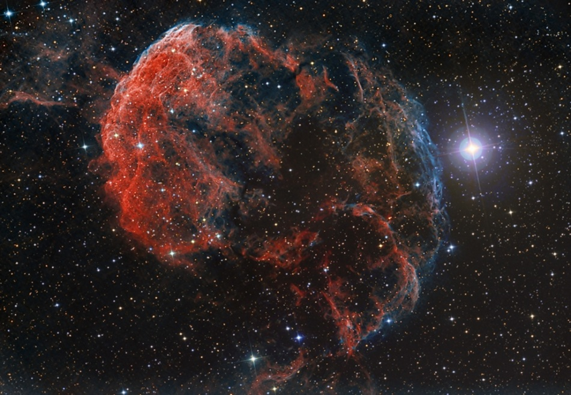

-
Shell-type remnants come from supernovae that push through interstellar material, producing a shell of hot gas which appears as a ring in images of the nova remnants. An example is GK Persei

-
Crab-type remnants emit large numbers of high-energy electrons, which illuminate the gas in the nova remnant in the Xray, Visible, and Radio, producing a "blob" shaped nova remnant. An example is the Crab Nebula

-
Composite-type remnants display properties of both shell-type and crab-type supernova remnants. An example is IC-443
